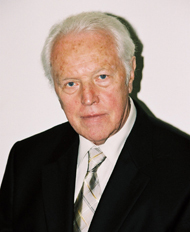

Die deutsche Version dieser Homepage finden Sie unter fhab.de Die deutsche Version dieser Homepage finden Sie unter fhab.de |
| |
|
Themes of work at the Free High School at the Lake of Constance (FHaB)
1. Karmic Tasks
The tasks worked out in concordance with the Hierarchies before birth: To what extent can these be realized and recalled in collaboration with the Angel of the human being? These tasks remain in the field of consciousness of the higher self or the entelechy of the human being.
2. Geopathic Examinations
Geopathic influences are far more extensive than commonly known. They work from within the 9 layers of the earth as well as from the cosmos; here the realm of the moon as a sphere of discarded ether bodies of the dead. The FHaB possesses, as so far the only institution, knowledge of these connections as well as of the possibility to diagnose them. Also, the common knowledge – including that within spiritual scientific circles - of these matters is insufficient to gauge the balance of power of the subsensible layers of the earth and the three doubles of the human being.
3. Spiritual Schooling
Spiritual schooling is based on the one hand on life-experience, on the other hand on focused exercises of concentration aimed at specific effects on the supersensible organism of the human beings, the chakras. Here the starting point within the different schools is to be recognized. The only school, which cognizes and is able to consider the entirety of chakric developments within the interconnected system of the chakras, is the hermetic school. This school comprises all aspects, the hierarchical as well as the subsensible, which the human being must have at his disposal in order to be able to develop into a being of the 10th hierarchy.
4. The Church and spiritual research
With the means of schooling within the realms of spiritual science, especially those that are in accordance with Rudolf Steiners and Valentin Tombergs teaching, specific spiritual experiences (Revelations) can be achieved. These realms are also available to occultists of the Church with their means of schooling. As to the application of the experiences of spiritual research it seems as if the Church to all appearances refrains from administering these. Even the Catholic Church has neither – whether in its edifice of theological knowledge, nor in its orthopraxic teachings – found the path, nor is it prepared to grant enlightenment and lend help to people, which is sorely needed within the current tide of subsensible demoniacal onrush.
5. A Science of the Spirit based on Anthroposophy
The science of the spirit was developed, researched and taught in a comprehensive form by Rudolf Steiner, the founder of Anthroposophy. To its further extension, which Steiner expected to take effect after his time, essential contributions were made in the field of Christian Hermeticism through its eminent exponent, Valentin Tomberg. Through the Christological Work of Tomberg the occultism of Eastern Europe also received the means to aid the peoples of this realm of culture by making the Christological knowledge of the deeds of Christ, which can grant deliverance, available to them.
It is certain that through the appearance of the Christ in the etheric since the 20th century, extended knowledge and abilities have become possible that have fundamentally changed the prospect of occultism, i.e. the possibilities of spiritual research. Cognizance of these facts is available to Christian occultism.
6. The Source of Knowledge of the Tarot
As regards this question one has to point to Zarathustra, the spiritual teacher in ancient Persia, who already before this time, during the ancient Atlantean evolution, was a leading individuality within the Sun Oracle. He was the spiritual teacher of the later Hermes Trismegistos, to whom the cultic symbols of the Church as well as the Schools of Initiation of Egypt can be traced back. From these the Tarot is derived. It has been preserved until the present time through its Imaginations based on spiritual reality. It was extended, however, in the “School of Christ” which Hermes, in his incarnation as Valentin Tomberg, re-enlivened.
7. The course of development of the chakras
The concise and systematic development of the chakras requires knowledge of how, in which way and through which influences these supersensible organs have fallen prey to human arbitrariness since the so-called Fall of man and the loss of the Paradisiacal condition. Since that time the chakras have been torn out of their cosmic connection with the spiritual hierarchies in that they became diseased and decayed. A contemporary understanding of the chakras requires knowledge of the origination of the chakras, the poisoning of the chakras, the disease processes of the chakras, the healing of the chakras, the enlivening of the chakras, the enlightenment of the chakras and the exaltation of the chakras (see Chakra Werk K 1, 5/1).
8. Chakra comprehension
Understanding and knowledge of the chakras is a prerequisite for spiritual schooling today and in the future. Such chakra knowledge instructs on the capabilities of chakras developed in a sound and healthy way. However, it also warns of the dangers that can lead to the degeneration of these spiritual organs, as well as ways in which they can be abused. The healthy development of the bodily, soul and spiritual members of the human organism is also a prerequisite. The chakras should only be cultivated and enlivened from the superior spiritual field of consciousness. To this effect the Free High School at the Lake of Constance possesses extensive knowledge.
9. Spiritual methods of diagnosis
Spiritual methods of diagnosis is founded on the fact of repeated incarnations during the different cultural epochs as illnesses often have their causes in times long past. In this way attention is directed at the finer and less coarse members of the human organism and not primarily at the physical bodily organization. One such method takes as its starting point the diagnosis of the etheric body (life body) as it is this body which gives the human being his bodily formation. The etheric heart constitutes the centre of the etheric body which is to be investigated so as to ascertain its state of purification, its strains and contaminations and the existence of states of fallen or corrupted types of ether.
Other methods diagnose in accordance with the development of the members of the human being in the cultural epochs during which the various members were to be developed consecutively. Still another method considers to what extent the organization of the members of the human organism could be consummated in accordance with the so-called sacrifices of Christ.
The spiritual diagnosis of cancer has to take into consideration differentiated stages within 5 areas of being, as well as whether the illness has its cause in the present, the previous or a still older incarnation.
With these few indications the variety of psychiatric illnesses has still not been dealt with, nor have the rest of incriminatory misdoings from past times that can be detected in their ramifications deep inside the spiritual spheres of the human being.
Diseases, deformations of the members of the human being and deviant behavioural patterns show in the spiritual diagnosis as being energized from the corrupting forces of the inner layers of the earth and are conserved in the subsensible Akasha Chronicle.
These means of diagnosis are not applicable unless moral-spiritual schooling is first undertaken. Also the methods and means of diagnostic cognition are first to be consciously worked out and attained.
New Release

» Details
» zum Verlag
Willi Seiß

» Willi Seiß
» aktuelles Buch
» Das Chakra Werk
» Brief zur Hochschulfrage